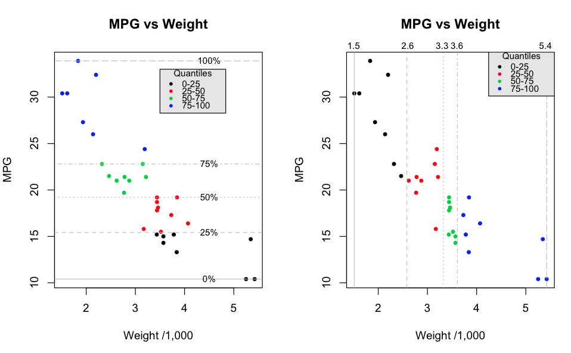

{kind=link}

Please refer to the following graphic, which represents a single plot composed of two panels. Use Base Graphics commands (e.g. abline, mtext, text, etc) to construct a replica of this graphic. The data source is the infamous mtcars data frame. Create a single function, (e.g. mtcarsplot), that I can call, which will produce the plot. Don't worry so much about matching the exact color of gray used in the legend though pick something close. Keep the following in mind:
mtcarsplot()
Here is a graphic I want you to reproduce using Base graphics. The image you see below is my reproduction. Although these types of charts have dubious value for general statistical analysis or inclusion in research papers they do offer opportunities to learn a lot about graphics. Your attempt should be very close to mine or the original. To pick colors accurately consider using the browser plug in called "ColorZilla" that is available for Firefox or Chrome. It has an "eye dropper" tool that lets you hover over a color and it will tell you the hexadecimal value of the color that you can then use when you specify colors in R. Windows users can download a standalone application for free that does this also. It is called Instant Eye Dropper.
Making this plot will be largely a manual process although you should use vectors where possible to simplify the construction of the chart. Use any of the high and low level Base graphic functions you want. Enclose all statements necessary to create this plot in a function called "chart". It doesn't need to have any arguments. We should be able to call it and it will produce the graphic as indicated below.
You will most definitely need to dig into the help pages for functions like mtext, segments, axis, etc and conduct some experiments to get things looking right. Refer to my reproduction and you will see that the grid lines do not overlay the bars in the plot. That is they are behind the bars. Your version should be like this also.
chart()
To work this problem correctly look at the various arguments for the lattice commands. Look at the lecture examples for lattice. There is more than one way to get the plot as desired but these arguements will help you. Note also that you should let xyplot select the colors for you. You should not have to specify colors by hand in any way. lattice will "give" you most ,if not all, of what you need so if you find yourself working too hard to get the graphic then you are not using the power of the lattice package.
url <- "http://steviep42.bitbucket.org/bios545r/DATA.DIR/my.diamonds.csv"
myd <- read.csv(url,header=T,sep=",")
Format:
A data frame with 1,000 rows and 10 variables
Details:
• price. price in US dollars (\$326-\$18,823)
• carat. weight of the diamond (0.2-5.01)
• cut. quality of the cut (Fair, Good, Very Good, Premium,
Ideal)
• colour. diamond colour, from J (worst) to D (best)
• clarity. a measurement of how clear the diamond is (I1
(worst), SI1, SI2, VS1, VS2, VVS1, VVS2, IF (best))
• x. length in mm (0-10.74)
• y. width in mm (0--58.9)
• z. depth in mm (0-31.8)
• depth. total depth percentage = z / mean(x, y) = 2 * z / (x +
y) (43-79)
• table. width of top of diamond relative to widest point
(43-95)
012014.csv, 022014.csv,...,122014.csvThe format of each file is the same although the data values will be different. The content relates to weather data for the zipcode 30322, (the Emory zip code), as recorded by the online weather service Wunderground. Here are the fields contained within each file. The relevant fields for your function are EDT, (the date of the measurement), Mean.TemperatureF, ( the Mean temperature for that given date), and MeanDew.PointF, (the Mean Dew point for that given date).
[1] "EDT" "Max.TemperatureF" [3] "Mean.TemperatureF" "Min.TemperatureF" [5] "Max.Dew.PointF" "MeanDew.PointF" [7] "Min.DewpointF" "Max.Humidity" [9] "Mean.Humidity" "Min.Humidity" [11] "Max.Sea.Level.PressureIn" "Mean.Sea.Level.PressureIn" [13] "Min.Sea.Level.PressureIn" "Max.VisibilityMiles" [15] "Mean.VisibilityMiles" "Min.VisibilityMiles" [17] "Max.Wind.SpeedMPH" "Mean.Wind.SpeedMPH" [19] "Max.Gust.SpeedMPH" "PrecipitationIn" [21] "CloudCover" "Events" [23] "WindDirDegrees"
You will be writing a function called weather that will use the .csv files as input. The weather function will accept three arguments:
Here are some suggested steps that might help you organize the flow of your function:
Your function will label the x axis accordingly. That is, it will flexibly handle ranges of dates. Use the following two examples as models. You will need to divide the time ranges into 6 intervals. There is a hard way to do this and an easy way. You already know a function that can help you with this although you can use whatever method you want. The gird lines MUST match up with the X labels. The horizontal grid lines must match the examples also.
weather("2014-01-15","2014-02-28","~/Downloads/weatherdat")
weather("2014-01-01","2014-12-31","~/Downloads/weatherdat")